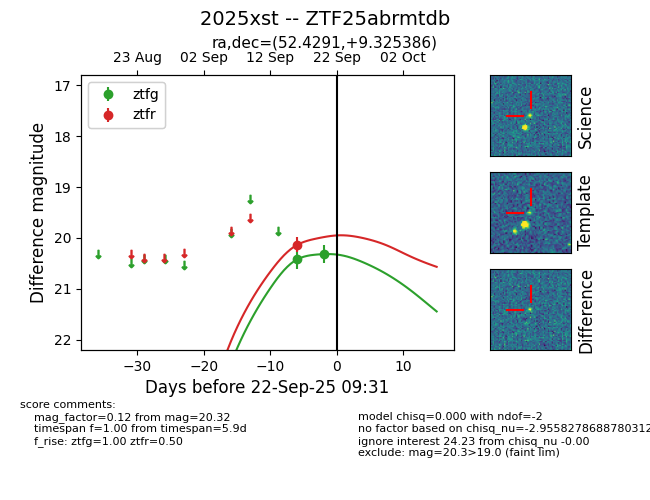

FINK: ZTF25abrmtdb
Lasair: ZTF25abrmtdb
ALeRCE: ZTF25abrmtdb
TNS: 2025xst
YSE: 2025xst
ZTF25abrmtdb (ztf,fink)
2025xst (tns,yse)
equatorial (ra, dec) = (52.4291,+9.32539)
galactic (l, b) = (174.9347,-37.09179)

last ztfg=20.32, ztfr=20.18
2 ztfg, 2 ztfr detections